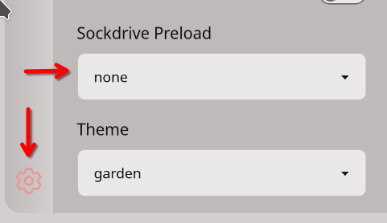

Publish Sockdrive bundle
Bundles with QCOW2 images (base images) are typically very large, as they include the full QCOW2 disk image. This makes them impractical for deployment due to their size. Additionally, since the bundle contains a block-level drive image, the built-in js-dos save/load functionality does not work properly. Any modification to the drive alters the entire image, making differential updates ineffective.
To address this, use the Sockdrive protocol when deploying such drives.
Sockdrive protocol
The idea behind the Sockdrive protocol is simple. Instead of transferring a full disk image, we convert it into a collection of files. Each file contains only a portion of the disk, so whenever the emulation reads data, it accesses the corresponding file. This results in downloading only the needed part of the disk.
The same happens when the user writes to a file—only the relevant portion of the disk is updated. This is an efficient protocol that allows us to deploy large disk images on a static server without requiring any backend.
Converting js-dos bundle to js-dos sockdrive bundle
Prerequisites
Install following packages:
For working with qcow2 images you must change permission of /boot/vmlinuz-*:
Using sockdrive cli
Download sockdrive cli
Convert using following command:
jsdos_bundle - path to the jsdos bundle file (or directory with bundle files)
drive_prefix - prefix for generated drives (e.g. 'gamename-')
output_dir - path to the output directory (where sockdrive files will be placed)
url - js-dos will use this url to download drive pieces when needed. This url should serve contents of output_dir.
sockified_bundle - path to the resulting jsdos bundle file
-b: enable brotli compression (brotli cmd should be in PATH)
-g: enable gzip compression (gzip cmd should be in PATH)
Example:
in our example you need to publish context of ./sockdrive folder to your web-server, they should be available at https://my.site/sockdrive
in ./sockdrive our tool will create folder bundle-... that will contain contents of qcow disk.
if you bundle contains two qcow images, then tool will create two folders, etc.
Compression
We strongly recommend to use compression and serve files with correct Content-Encoding header. Just add -b or -g switch to the end of command.
Numbers for Turok 3Dfx:
Uncompressed: 193Mb
Gzip: 95Mb
Brotli: 87Mb
Publishing sockified drive
You need to publish:
./sockdrive folder as explained before
bundle-sockified.jsdos - it's a typical jsdos bundle that configured to use sockdrive you created
First run optimization
As explained earlier, the idea behind Sockdrive is to load only the files needed by the emulation. However, some portions of the disk are required for all users—such as parts of the OS, game files, etc. We can preload these files immediately instead of waiting for the emulation to request them. Every time the emulation downloads a portion of the disk, it pauses and waits for the required data, which can slow things down. To address this issue, you need to identify which portions of the disk are required and instruct js-dos to preload them at startup.
After deploying your game, please open its webpage in private tab.
Open the settings panel. Then set
Sockdrive PreloadtoNone.
Run emulation and play the game as much as you want
Open Dev Tools of browser and type
Copy output of this command and execute it in terminal:
Now, you have file /tmp/preload_ranges.metaj that contains sectors of disk that need to be preloaded, put it into ./sockdrive/bundle-... folder, and it will be applied automatically.